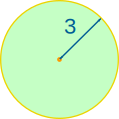

Area of a Circle
Calculator
Enter the radius, diameter, circumference or area of a Circle to find the other three. The calculations are done "live":
How to Calculate the Area
The area of a circle is:
Example: What is the area of a circle with radius of 3 m ?

Radius = r = 3
How to Remember?

To help you remember think "Pie Are Squared"
(even though pies are usually round)
Comparing a Circle to a Square
It is interesting to compare the area of a circle to a square:

A circle has about 80% of the area of a similar-width square.
The actual value is (π/4) = 0.785398... = 78.5398...%
Why? Because the Square's Area is w2
and the Circle's Area is (π/4) × w2
Example: Compare a square to a circle of width 3 m
Square's Area = w2 = 32 = 9 m2
Estimate of Circle's Area = 80% of Square's Area = 80% of 9 = 7.2 m2
Circle's True Area = (π/4) × D2 = (π/4) × 32 = 7.07 m2 (to 2 decimals)
The estimate of 7.2 m2 is not far off 7.07 m2
A "Real World" Example
Example: Max is building a house. The first step is to drill holes and fill them with concrete.
The holes are 0.4 m wide and 1 m deep, how much concrete should Max order for each hole?

The holes are circular (in cross section) because they are drilled out using an auger.
The diameter is 0.4m, so the Area is:

A = (π/4) × D2
A = (3.14159.../4) × 0.42
A = 0.7854... × 0.16
A = 0.126 m2 (to 3 decimals)
And the holes are 1 m deep, so:
Volume = 0.126 m2 × 1 m = 0.126 m3
So Max should order 0.126 cubic meters of concrete to fill each hole.
Note: Max could have estimated the area by:
- 1. Calculating a square hole: 0.4 × 0.4 = 0.16 m2
- 2. Taking 80% of that (estimates a circle): 80% × 0.16 m2 = 0.128 m2
- 3. And the volume of a 1 m deep hole is: 0.128 m3
And something interesting for you: